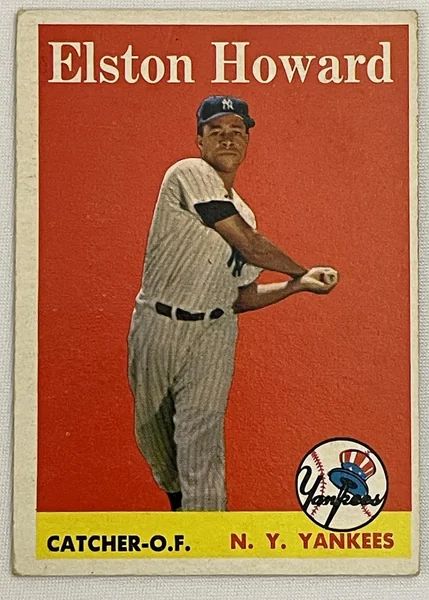

Elston Howard "Ellie"
Career Highlights & Facts
(Facts are AI-generated and may require verification)
- He was the first player of his race to join the most storied organization in the sport, famously appearing on a popular variety show to announce his arrival.
- He became the first African-American to win the Most Valuable Player award in his league, a testament to his leadership behind the plate.
- He was the first black man to ever model clothing for a major fashion magazine, breaking barriers both on and off the diamond.
Would you like to find out more about Elston Howard?
Career Totals
| WAR | AB | H | HR | BA | R | RBI | SB | OBP | SLG | OPS | OPS+ |
|---|---|---|---|---|---|---|---|---|---|---|---|
| 27.1 | 5443 | 1491 | 168 | .274 | 635 | 775 | 10 | .321 | .427 | .748 | 107 |
Statistics via Baseball-Reference.com
The Original Clue